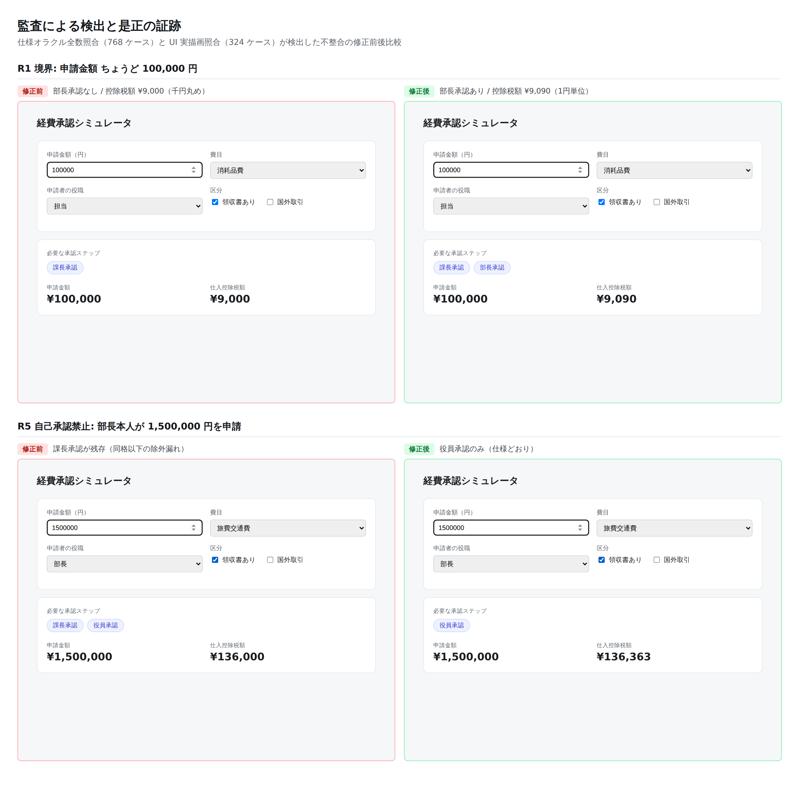

ローカル開発では、人間はコードを読み、動かし、触って品質を確かめる。 実行環境が手元から離れたとき、その三つのうち何が失われ、何を機械に置き換えられるのか。 実際に欠陥を仕込んだコードを書き、四つの監査チャネルを走らせて検出力を実測した。
13 件全パス・分岐カバレッジ 100% の状態で、仕込んだ欠陥 3 件すべてを見逃した。カバレッジは品質の指標ではない。
768 ケースの全数照合で 288 件の不整合を自動検出。ロジック層の欠陥 2 件を人間の操作なしに特定した。
実ブラウザに描画された文字列を仕様と突合。表示層だけの欠陥を含め全件検出。324 ケースを 24 秒。
実装全文ではなく、仕様書と独立オラクル、そして差分表だけ。監査の負荷は実装規模に比例しない。
能力の議論の前に、実測値を置く。以下はすべてこのセッション内で実行して確認した事実である。
| 項目 | 実測結果 | 監査上の意味 |
|---|---|---|
| コード実行 | 可 Node v22.22.2 ／ Python 3.11.15 | テスト・静的解析・任意のスクリプトを完全に実行できる |
| 実ブラウザ操作 | 可 Chromium 事前配置＋Playwright | 画面の描画・操作・スクリーンショット取得が可能 |
| ローカルサーバ | 可 127.0.0.1:8123 で疎通 | アプリを起動して実際に叩ける |
| 計算資源 | 4 vCPU ／ 16 GB RAM ／ 空き約 30 GB | 実用的な規模のビルド・テストに耐える |
| 外部ネットワーク | 制限 npm・PyPI は 200、一般サイトは遮断 | 外部 API 連携の実地確認はできない場合がある |
| セッションの永続性 | なし コンテナは破棄される | push しない成果物と証跡は消える |
「見られない・動かせない」のは 人間 であって、環境ではない。 環境そのものはローカルとほぼ同等の実行能力を持つ。 したがって問題は能力ではなく 観測 —— 実行した結果を、人間がどう受け取り、どう判断するかの設計問題に還元される。
監査手法の良し悪しを主観で語らないために、既知の欠陥を仕込んだ題材を用意し、各チャネルが何件見つけるかを測った。
題材は経費承認のルーティング。金額・費目・申請者の役職から必要な承認ステップを決め、
仕入控除税額を計算する。仕様は SPEC.md に条文として固定した。
そのうえで、実務で実際に起きる三種類の欠陥を仕込んだ。
| ID | 欠陥 | 性質 | 実務での帰結 |
|---|---|---|---|
| D1 | R1 の閾値を > で実装（仕様は「100,000 円以上」） |
境界値の等号取り違え | ちょうど 10 万円の申請が部長承認を経ずに通る |
| D2 | 自己承認禁止を「同格のみ除外」と解釈（仕様は「同格以下」） | 仕様解釈の誤り | 部長申請に対し課長承認が残り、統制が形骸化する |
| D3 | 画面表示のみ千円単位に丸め（ロジックは正しい） | 表示層限定の欠陥 | 2,999 円の控除税額 272 円が「¥0」と表示される |
重要な前提。 単体テストは「実装者の理解」に沿って書かれている。D2 のように理解そのものが誤っている場合、 テストは誤りを固定するだけで、検出装置としては機能しない。 この構造は人間が書いても AI が書いても同じであり、AI 特有の問題ではない。 ただし AI は同じ理解で実装とテストを一気に書くため、誤解が両方に均一に伝播しやすい。
人間の「読む・動かす・触る」を機械側に配分し直した四つのチャネル。実測結果は明確に分かれた。
| チャネル | 置き換える人間の行為 | 規模 | D1 | D2 | D3 |
|---|---|---|---|---|---|
| ① 単体テスト＋カバレッジ 実装者の意図の自己申告 |
— | 13 件 | ✗ | ✗ | ✗ |
| ② スクリーンショット行列 状態を列挙して静止画に固定 |
読む・見る | 5 状態 | ✓ | ✓ | ✓ |
| ③ 仕様オラクル全数照合 仕様から独立に書いた実装と差分比較 |
触る（探索） | 768 ケース | ✓ | ✓ | — |
| ④ UI 実描画 × 仕様照合 ブラウザが描いた文字列を仕様と突合 |
触る（操作） | 324 ケース | ✓ | ✓ | ✓ |
audit/oracle.mjs は SPEC.md の条文だけを根拠に約 40 行で書き、
実装を一切参照していない。両者は同じ仕様から独立に導かれた二つの答えであり、
食い違えばどちらかが間違っている。機械が 768 通りを突き合わせ、人間には差分表だけが届く。
この独立性が崩れた瞬間、③ は無価値になる。だから運用上の不変条件を置いた —
オラクルは実装を見て書かない。差分が出たとき、直す候補は実装か仕様の記述であって、オラクルではない。
仕様変更は SPEC.md → オラクル → 実装 の順にしか流さない。
| チャネル | 是正前 | 是正後 |
|---|---|---|
| 単体テスト | 13 pass / 0 fail | 17 pass / 0 fail（回帰テスト 4 件追加） |
| 仕様オラクル照合 | 288 / 768 不一致（16 パターン） | 0 / 768 不一致 |
| UI 実描画照合 | 252 / 324 不一致 | 0 / 324 不一致 |
ここから先は読み物ではない。実際に動いている実装そのものがこのページに載っている。 欠陥を注入し直し、監査が本当に捕まえるかを、あなたの手で確かめられる。
— ボタンを押すと、このページの中で監査が実行されます。ローカル環境は不要です。
これが「触れない」問題への最も直接的な答えになる。 レビュアーは自分の端末に何もインストールせず、リポジトリを clone せず、 実装そのものを対話的に叩いて確かめられる。 純粋なドメインロジックとフロントエンドについては、ローカルの探索的テストとほぼ同等の体験が成立する。
機械の照合が通っても、最終的に「これでよい」と言うのは人間である。そのために、状態を列挙した画面の証跡を残す。

audit/compare.mjs が生成した是正証跡。是正前の画面（左）は監査の基準線として
audit/baseline/ に保全され、リポジトリに commit されている。
「いつ・何を・どう直したか」がコードと画像の両方で追跡可能になる。
ここまでの手法で埋まらないものを正直に列挙する。エンタープライズで責任を持つなら、埋まらない部分こそが判断の対象になる。
| ローカル開発での行為 | Web 環境 | 代替手段と、その限界 |
|---|---|---|
| コードを読む | ◎ | 差分レビューは元から非対話。むしろ仕様・オラクル・差分表に絞られ負荷は下がる |
| テスト・ビルドを走らせる | ◎ | 環境の実行能力はローカルと同等。CI を必須化すれば人間の手元実行は不要 |
| 画面を見る | ○ | スクリーンショット行列＋公開ページ。ただし列挙した状態しか写らない |
| 画面を触って探索する | △ | 本ページのような実装同梱の公開ページで大部分は再現できる。 バックエンド・認証・外部連携を含む系では成立しない |
| 未知の欠陥に「気づく」 | △ | 全数照合は仕様に書いたことしか検証しない。仕様の外側にある問題は原理的に検出対象外 |
| 実機・実データでの確認 | × | egress 制限とデータ非持ち込みにより不可。ステージング環境での受入試験が別途必要 |
| 性能・負荷の実測 | × | 共有コンテナ上の測定値は本番の予測に使えない |
| リアルタイムの割り込み | △ | 介入は非同期になる。plan mode での事前承認と PR レビューに介入点を移す必要がある |
この検証で最も重要な発見は、技術的な可否ではない。 品質保証のコストが、実装の後段から前段へ移動する ことである。
③④ が成立したのは SPEC.md という判定基準が存在したからだ。
仕様が曖昧なまま「いい感じに作って」と依頼すれば、オラクルは書けず、
照合は成立せず、監査は「実装を全部読む」に逆戻りする。
ローカル開発では、人間が動かしながら仕様を事後的に発見できた。その逃げ道が塞がる。
Web 環境で AI に開発させることは、仕様を先に書くことを事実上強制する。
これは制約であると同時に、エンタープライズにとっては統制上の利点でもある。
以上を踏まえた、人間が品質責任を保持したまま自律開発を受け入れるための構成。
| 段階 | 人間の行為 | 成果物 | これを怠ると |
|---|---|---|---|
| 着手前 | 仕様の承認。条文として書かれた判定基準を読み、承認する | SPEC.md／plan mode での計画承認 |
以降のすべての自動監査が根拠を失う |
| 実装中 | 差分表のレビュー。実装全文ではなく、仕様と食い違った箇所だけを判断する | 照合レポート／CI の失敗内容 | 不整合が「テスト緑」に埋もれる |
| 受入時 | 証跡の承認。画面の証跡と是正前後の比較を見て、最終判断する | スクリーンショット行列／PR レビュー | 仕様に書き落とした要件が本番に出る |
npm run audit が落ちたらマージ不可。
人間の善意ではなく機構で担保する。.claude/settings.json に依存関係の復元と検証サーバ起動を書き、
どのセッションでも同じ監査が走る状態を保証する。audit/baseline/ に保全すれば、
「何を検出し、どう直したか」が git の履歴として監査可能になる。ローカルと同一の開発体験は得られない。 人間がリアルタイムに割り込み、勘で触って気づく経路は失われる。
しかし 同等以上の品質保証は成立する。本検証では、 人間の手作業に依存した従来型の確認（単体テスト 13 件・カバレッジ 100%）が 3 件中 0 件しか捕まえなかったのに対し、 仕様を正典に据えた機械的全数照合は 3 件中 3 件を捕まえた。 再現性・網羅性・証跡性という監査の三要件については、Web 環境のほうが構造的に強い。
条件は一つ。人間が仕様を書き、承認すること。 その一点を人間が担い続ける限り、実装の自律化は品質責任の放棄にはならない。